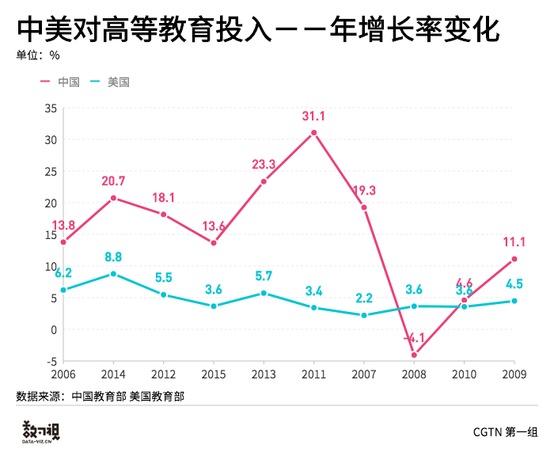

一直以来国内舆论界有个说法：中国政府对教育的投入严重不足，远远达不到国际标准。到底真相如何？
中国近二十年的教育投入
中国近二十年来对教育的投入一直在增加....此处会有更详细的文字.
中国从政府经费、民间办学到社会捐赠三个渠道汇总的教育总经费近二十年来在逐年增加...
中美对教育的重视程度
中国和美国都十分重视教育。国际对于教育投入的标准有两个：第一个是公认的标准，全社会教育总投入占GDP的比值，4%是欧美国家的平均水平，超过5%就很优秀了。另一个是政府的教育投入占政府财政总支出的比值。
中国教育支出占GDP的比重，中国在2008年和美国之间的差距不是很大，但随着时间的推移，中国政府教育支出在GDP的比重总体是上升的趋势，并逐渐与美国拉开差距。.....
中国在2012年首次达到国际平均水平，此后虽然有所波动，但是始终在平均水平之上，离国际社会所公认的“优秀”，即政府教育投入占政府财政总支出的5%以上，还是有些距离。
而美国始终在国家平均水平之下，近十年来政府教育投入占政府财政总支出的比重变化不大，比较稳定。

中美对高等教育投入的年增长率变化中可以看出，美国总体增长较为平稳，也未曾出现负增长的情况。而中国再2008年突然出现负增长，不知道是否与当年的金融危机有关。之后可能由于中国的4万亿一揽子刺激计划，对高等教育的年增长率开始逐步回升。
小组成员：葛云飞 杨海静 马绍炎 常薇 井然